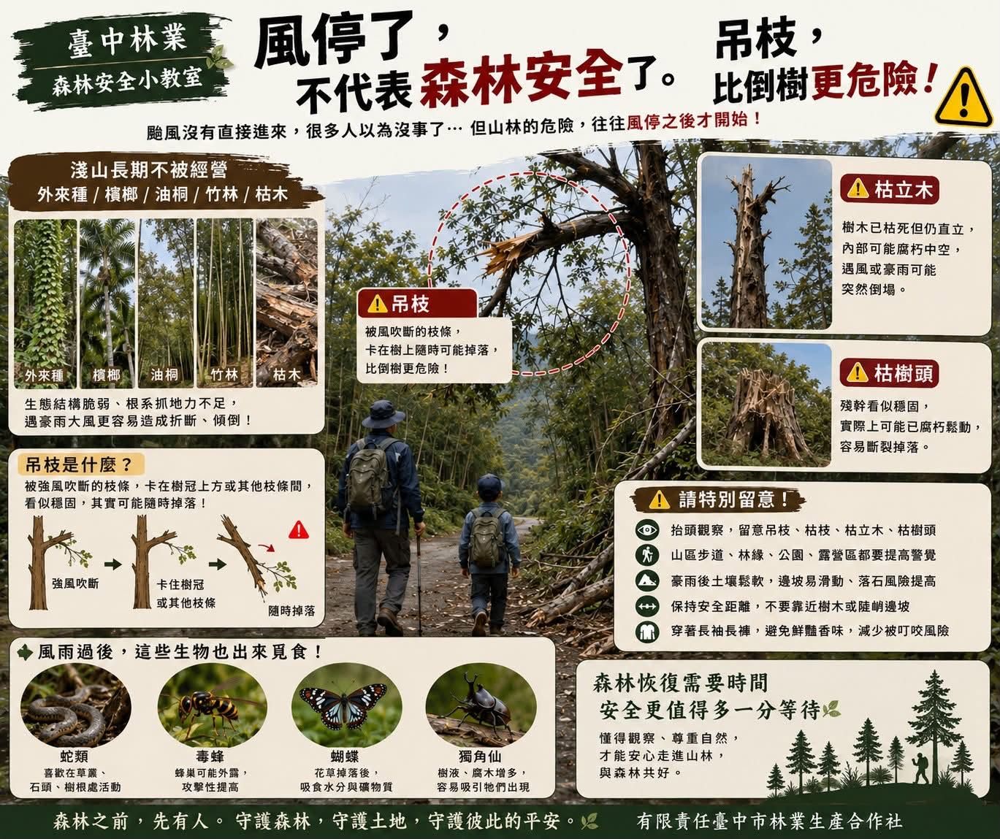
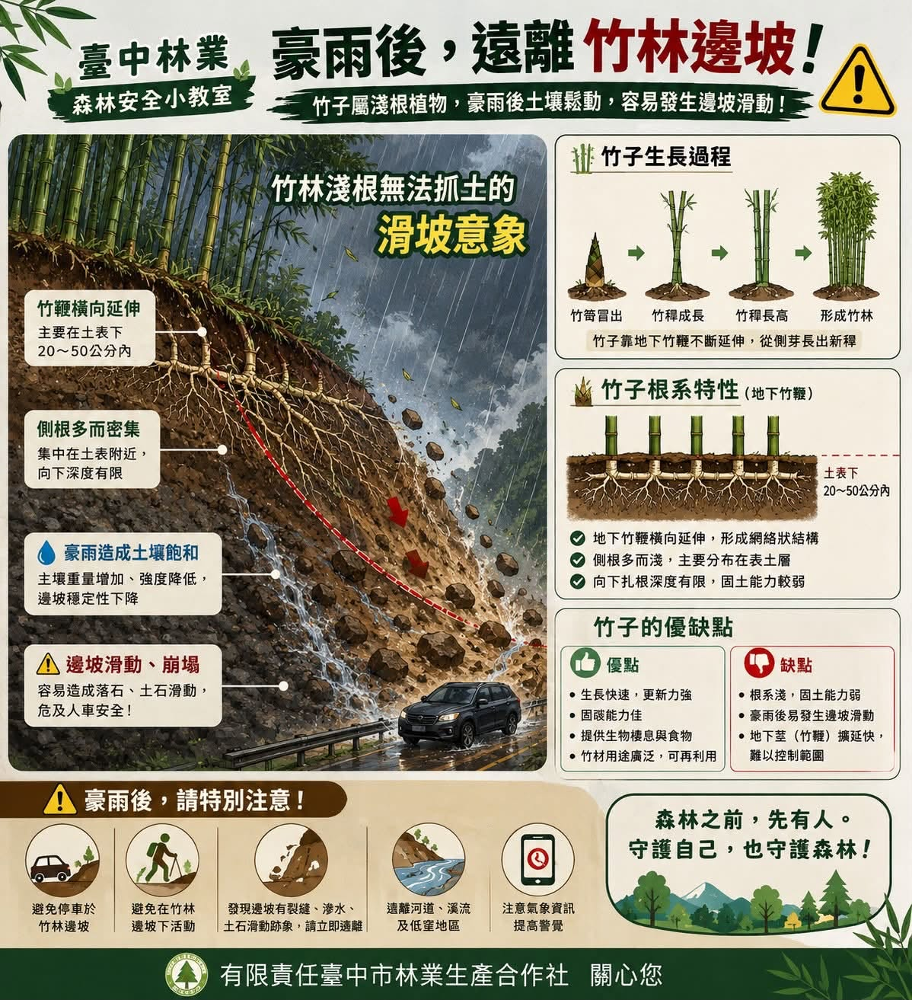

全台第一座森林療育社會基地 ── 森林之前，先有人。
本社經營來到第七年，發現解決森林經營的根本問題，「人、生活」才是根本。 於是主席與總監於 2024 年初推動成立 「頭嵙山・森活樂校森林社會基地」， 是全台第一座森林療育社會基地，以友好森林為宗旨，攜手林農一同種樹， 並協助林農生產、加工及製造農特產品。
社會基地推動青銀培力，讓森林與社區共好被更多人看見。
森林之前，先有人。懂得觀察、尊重自然，才能安心走進山林。

